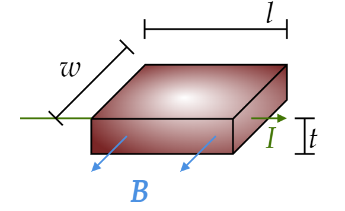

A current $I $ flows to the right through a rectangular bar of conducting material, in the presence of a uniform magnetic field $\mathbf{B} $ pointing out of the page (Fig. 5.59).
(a) If the moving charges are positive, in which direction are they deflected by the magnetic field? This deflection results in an accumulation of charge on the upper and lower surfaces of the bar, which in turn produces an electric force to counteract the magnetic one. Equilibrium occurs when the two exactly cancel. (This is known as the Hall effect).
(b) Find the resulting potential difference (the Hall voltage) between the top and bottom of the bar, in terms of $B $, $v $ (the speed of the charges), and the relevant dimension of the bar. Ref30
(c) How would your analysis change if the moving charges were negative? (The Hall effect is the classic way of determining the sign of the mobile charge carriers in a material).
My solution